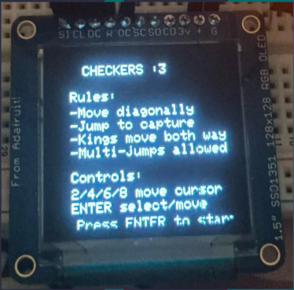
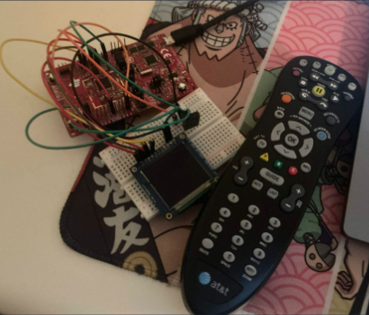
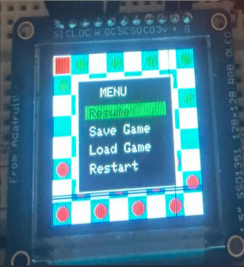
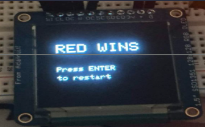

Project Overview
Checkers is a two-player digital checkers system implemented on the TI CC3200. The game is displayed on the OLED screen and controlled using an AT&T IR remote. Players can move pieces, capture opponents, promote kings, perform multiple jumps, and save or restore game states through AWS IoT.
Key Features
Embedded Gameplay
Fully playable checkers game on the OLED with cursor-based square selection.
AWS Cloud Save
Board states can be saved and restored using AWS IoT device shadow updates.
IR + Accelerometer Input
Remote buttons handle movement and actions, while the accelerometer supports interactive control and menu navigation.
Gameplay Logic
Implemented Rules
- Diagonal movement
- Single and multiple captures
- King promotion
- King backward movement and capture
- Turn-based play with win detection
Visual Feedback
- Highlighted cursor square
- Selected piece outline
- Valid move hint squares
- Turn-color indicator
- Winner screen and restart prompt
Hardware Used
Main Components
- TI CC3200 LaunchPad
- Adafruit SSD1351 Color OLED
- IR receiver and AT&T remote
- BMA222 accelerometer
Communication
- SPI for OLED display output
- GPIO interrupts for IR decoding
- I2C for accelerometer input
- TLS and HTTP for AWS communication
Demo Video
The short demo below shows the embedded checkers interface running on the CC3200-based hardware.
Project Gallery

Startup rules screen shown on the OLED before gameplay begins.

Hardware setup with the CC3200 LaunchPad, OLED, breadboard wiring, and IR remote.

In-game menu with resume, save, load, and restart options.

Winner screen displayed after a completed game.
AWS Integration
The project connects to AWS IoT over a secure TLS connection. The current board state and active player can be serialized and uploaded to the device shadow. A saved state can also be retrieved from the cloud and restored back onto the OLED.
Controls
IR Remote
2 / 4 / 6 / 8 move the cursor, ENTER selects or moves, 5 saves, 7 loads, and 0 opens the menu.
Accelerometer
Tilt-based cursor interaction and motion-triggered menu support add another interactive layer to the system.
Challenges Solved
Game Logic
Multi-jump logic, king movement, promotion, selection handling, and move validation were implemented and debugged directly on the embedded display.
System Integration
The project combines OLED drawing, IR decoding, accelerometer readings, and AWS cloud communication into a single embedded application.
Project Links
Quick access to the final project webpage and demo.
Future Work
- Improve menu visuals and transitions
- Add sound effects or score/stat tracking
- Support richer accelerometer-based navigation
- Add a polished cloud-connected status dashboard